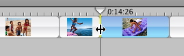

Fine-tune your footage
After you add a clip to your movie, you can adjust its length at any time by dragging one of its edges in the timeline viewer. This is called "direct trimming."

And don't worry about losing the footage you've trimmed away. iMovie always keeps a copy of the original clip, so if you make a mistake, you can always undo your changes by dragging the clip's edge back to its original postion or restoring the entire clip to its original state. You can even retrieve a deleted clip from the iMovie Trash after you delete it.
 Was this page helpful? Send feedback.
Was this page helpful? Send feedback.